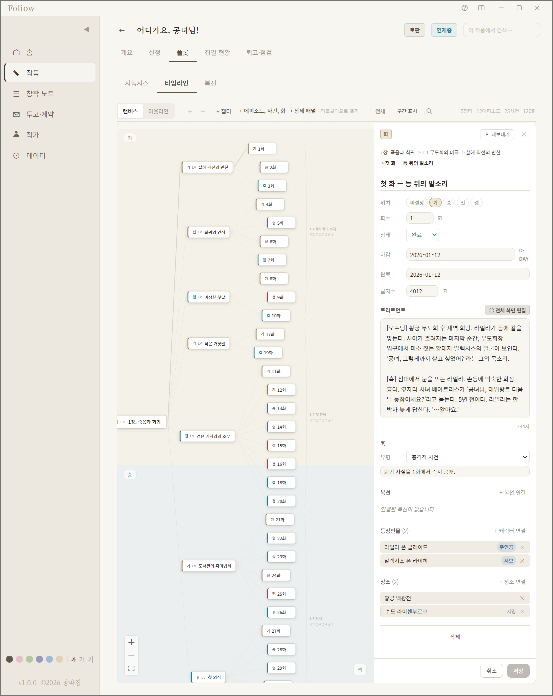
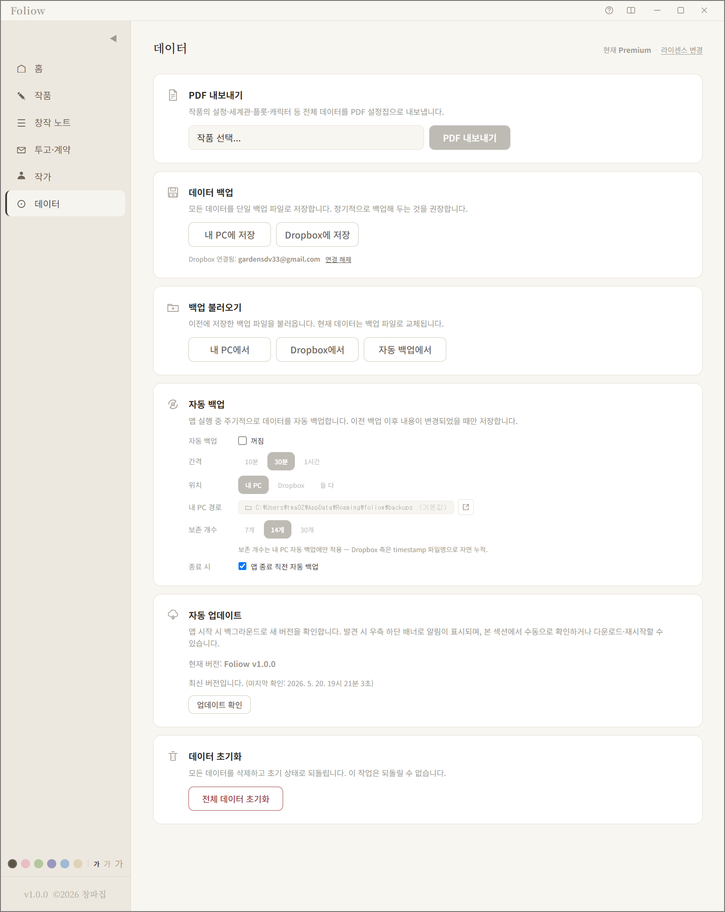

A fully offline desktop companion for web-novel authors.
Foliow helps web-novel authors organize the full surface of a long-form project — works, characters, worldbuilding, plot timelines, publisher contracts, and writing progress — in a single desktop application built on Electron for Windows and macOS.
All user data is stored locally on the user's own computer. Foliow does not operate any cloud backend and does not transmit user content to any third party by default.
Users may optionally connect their own Dropbox account to back up and
restore their Foliow data archives (.zip files containing
project data). When connected, Foliow only reads and writes inside its
own app-scoped folder (Apps/Foliow/) and does not access
any other files in the user's Dropbox.
Dropbox access is fully opt-in. Users initiate the OAuth flow from within the app and can disconnect at any time.


Foliow is currently distributed to backers through a crowdfunding campaign on Tumblbug, a Korean crowdfunding platform. Builds are provided for Windows and macOS, with offline license verification.
For inquiries, support requests, or privacy-related questions: gardensdv33@gmail.com